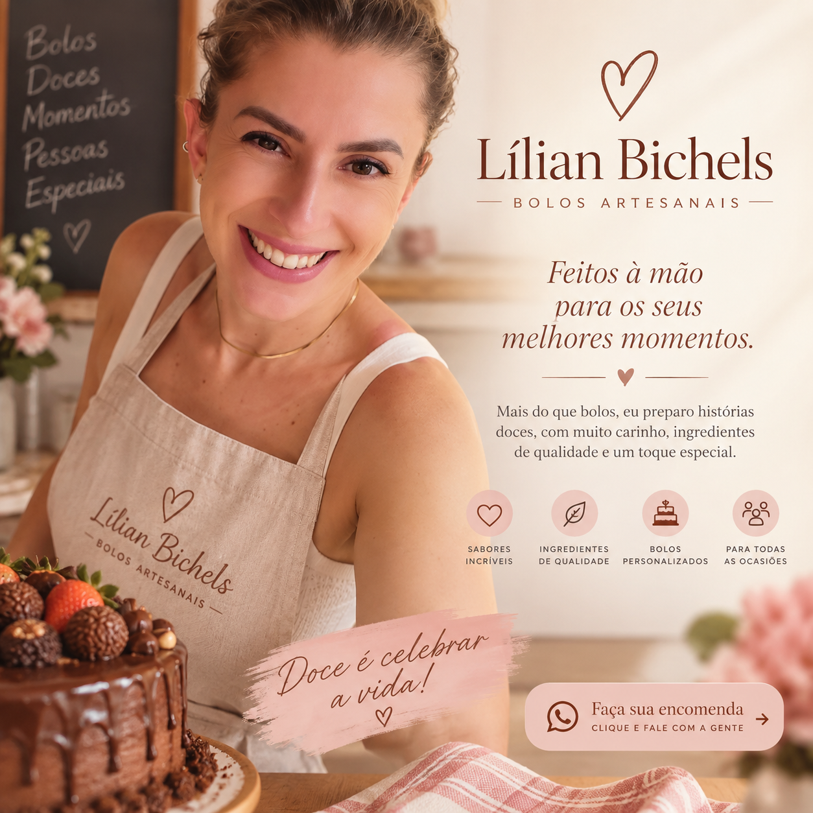

🍫
ARTESANAL
Chocolate Especial
Massa macia, recheio cremoso e acabamento artesanal.
Sob consultaBOLOS ARTESANAIS • FEITOS COM CARINHO
Bolos artesanais preparados com cuidado para aniversários, encontros e celebrações que merecem um sabor especial.
Um toque de carinho em cada fatia
Bolos artesanais para celebrarNOSSO CARDÁPIO
Consulte os sabores, tamanhos e valores pelo WhatsApp e encontre o bolo ideal para a sua celebração.
Massa macia, recheio cremoso e acabamento artesanal.
Sob consultaUma opção delicada e fresca para comemorações especiais.
Sob consultaCriado especialmente para combinar com a sua celebração.
Sob consulta
POR TRÁS DE CADA BOLO
Bolos artesanais feitos à mão, com cuidado em cada detalhe, para fazer parte dos seus melhores momentos.
Vamos conversar sobre a sua próxima celebração? Entre em contato pelo WhatsApp para combinar a sua encomenda.
COMO ENCOMENDAR
Veja os sabores e encontre o bolo ideal.
Informe data, tamanho e detalhes da encomenda.
Combine retirada ou entrega e aproveite.
Fale diretamente com a Lílian para consultar sabores, disponibilidade e valores.